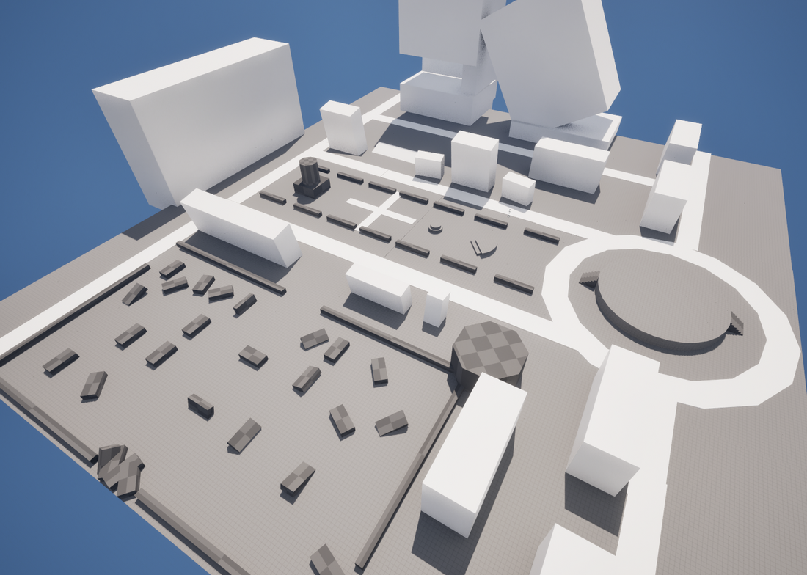

Purrvivor is an arcade-style top-down survivor game where the player needs to survive as long as possible and get a high score. Unlike other Vampire Survivor-like games, Purrvivor does not have the same gameplay loop that is about breaking the game and getting upgrades every level. The game is all about destroying the zombies with unique weapons and abilities that you find on the ground.
At this stage, I have completed the foundational blockout of the map. Conceptually, this is a massive arena set within a ruined city. To structure the design, I have divided it into distinct sectors:

Fig 1: Foundational blockout of the ruined city arena in Unreal Engine.
Keywords: Bushes, Openness, Multi-directional Access
Description: This serves as the player's spawn point and the theoretical center of the map. It features dense foliage and bushes that will slow down both you and your enemies.
Keywords: Explosions, Narrow/Claustrophobic
Description: A parking lot where the vehicles haven't suffered much damage yet—though the arrival of players might change that. Be warned: if subjected to heavy fire, a chain reaction explosion could send both you and the zombies sky-high.
Keywords: Watch the Sky
Description: Keep your eyes up; threats aren't limited to the ground level. Zombies can rain down from above.
Keywords: Center Stage
Description: How do you like this cleared-out platform? It was originally intended for a statue, but it looks like it has become your personal combat stage.
Keywords: Path of Survival
Description: The roads are, of course, a crucial part of the design. Move! Move! Move! Keep rotating and stay alive!
Below is a draft video showcasing our initial concept, game vibe, and early development stages:
Fig 2: Early presentation and draft overview of the Purrvivor project.